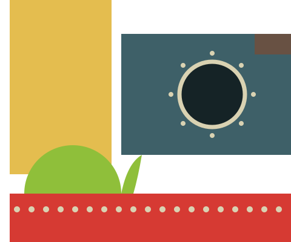

Petitie aan de gemeente Amsterdam
Behoud
De Ceuvel
Geen kaalslag, maar samen verder bouwen op wat er al staat. Teken en laat zien dat Amsterdam deze plek wil houden.
Wij, de ondertekenaars, vragen de gemeente Amsterdam:
- Behoud De Ceuvel als groene proeftuin voor duurzaamheid, ondernemerschap en gemeenschap in Amsterdam-Noord.
- Kies voor samenwerking in plaats van een tender. Een één-op-één gunning is juridisch mogelijk. Bouw voort op een initiatief dat zijn waarde al heeft bewezen.
- Realiseer het bestemmingsplan zonder sloop. Behoud wat waardevol is: de gebouwen, de gezuiverde grond, de natuur en het netwerk van mensen.
Waarom dit ertoe doet
De Ceuvel is gebouwd op vervuilde grond, met hergebruikte woonboten en planten die de bodem schoonmaken. In ruim tien jaar groeide hier een economisch, sociaal en ecologisch ecosysteem dat internationaal als voorbeeld geldt.
Wat de gemeente op papier wil (duurzaamheid, participatie, innovatie, gemeenschap), gebeurt hier elke dag in het echt. 'Samen de stad maken' vraagt om vertrouwen in wie dat al doet. Sloop vernietigt niet alleen gebouwen en natuur, maar ook jaren aan sociaal kapitaal en investeringen.
Zij tekenden al
- Laden…